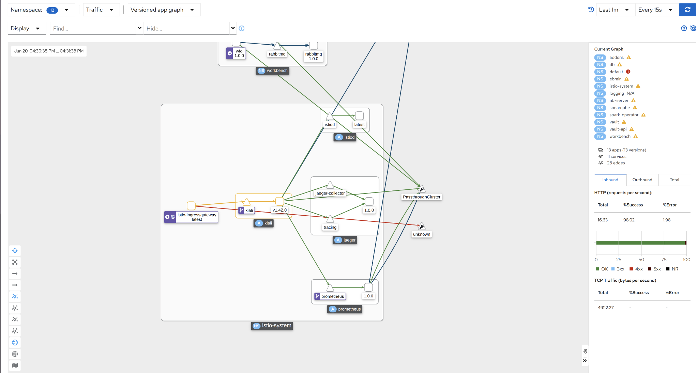
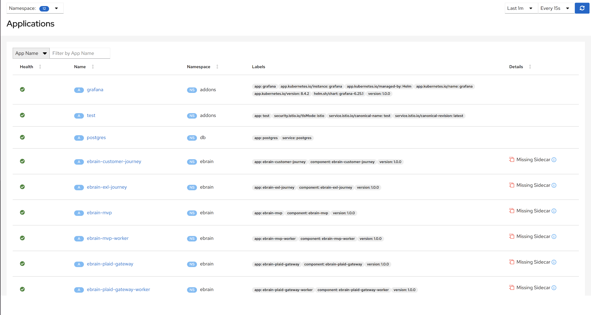
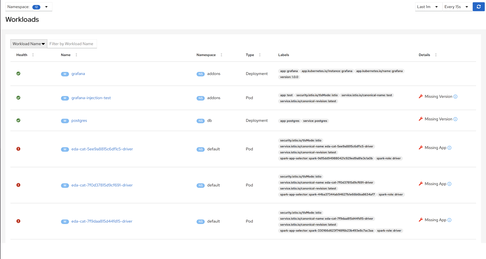
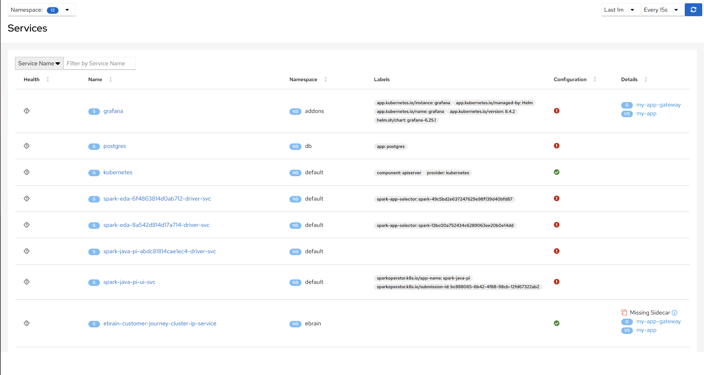
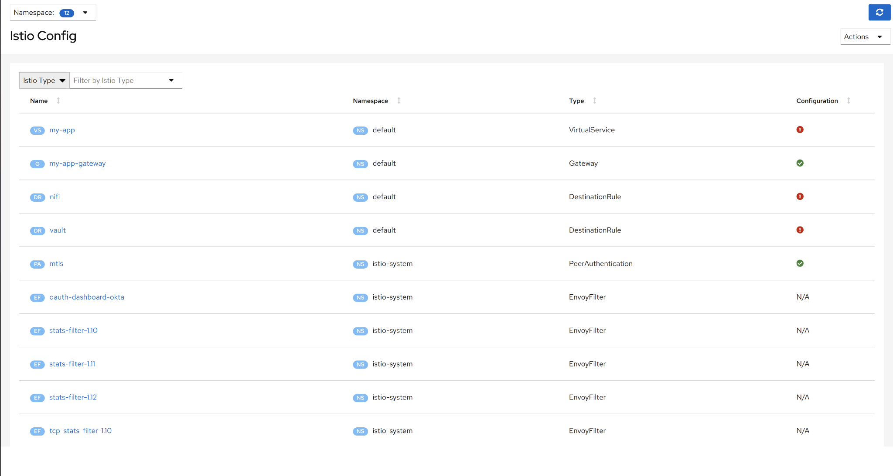

Observability#
Observability is an observation tool for Istio with service mesh configuration and validation capabilities. It provides insight into the structure and health of your service mesh.
Overview#
In the first screen user encounters when opening DSCW-Observability, he/she can monitor all the namespaces in your deployment at a glance. You can choose to monitor the health of Apps, Workloads, or Services from the dropdown menu in the upper right corner of your screen. You can navigate to different screens using the side panel located on the left side of your screen.
Graph#
{kind=link}
The Graph screen lets you monitor all the connections in your deployment. The bigger boxes represent namespaces while the smaller boxes represent applications, the circles represent workloads, the triangles represent the services, and lastly, the lines represent network connections.
Clicking on the applications, namespaces, or services focuses on its immediate connections and gives a detailed view of its network traffic. Clicking on a connection focuses on the components it connects.
Applications#
The applications screen allows you to browse through a list of all applications used in your deployment. You can also filter the applications by their namespace using the namespace filter in the upper left corner of the screen.
Clicking on an application leads to a more detailed view containing various metrics for that application.
#
{kind=link}
Workloads#
{kind=link}
The workloads screen allows you to browse through a list of all workloads used in your deployment. You can also filter the workloads by their namespace using the namespace filter at the upper left corner of the screen.
Clicking on a workload leads to a more detailed view containing various metrics for that workload.
Services#
{kind=link}
The services screen allows you to browse through a list of all services used in your deployment. You can also filter the services by their namespace using the namespace filter at the upper left corner of the screen.
Clicking on a service leads to a more detailed view containing various metrics for that workload.
Istio Config#
{kind=link}
The Istio Config screen allows you to browse through a list of all istio configs used in your deployment. You can also filter the configs by their namespace using the namespace filter at the upper left corner of the screen.
[Only for admins] Clicking on a config leads to an editor that allows you to edit it.